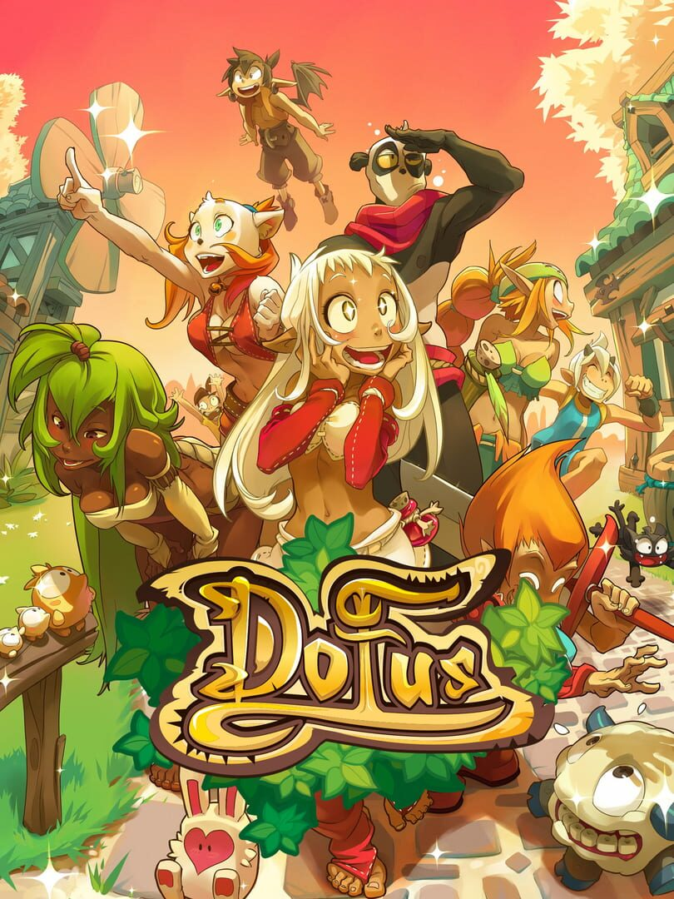

Dofus
Dofus
Details
|  | |
| Playtime | 1m 0s |
| Last Activity | 13/05/2019 5:21:10 |
| Added | 10/01/2017 |
| Modified | Never |
| Completion Status | Played |
| Source | Steam |
| Platform | PC |
| Release Date | 15/11/2016 |
| Community Score | 70 |
| Critic Score | 72 |
| User Score | |
| Genre | Adventure Massively Multiplayer RPG Strategy |
| Developer | Ankama Studio |
| Publisher | Ankama Games |
| Feature | Co-op In-App Purchases MMO Multiplayer Online Co-Op Online Pvp Pvp |
| Links | PCGamingWiki Community Hub Discussions Guides Store Page News |
Description

A VAST WORLD JUST WAITING TO BE DISCOVERED!
Step into the World of Twelve and explore its vast, lush landscapes, its gloomy moors and its many treasures. Its cities are bustling centres of commercial (and criminal) activity... The wildlife is magnificent, the water is pure, the air is fresh and sharp, and the earth is the most fertile you've ever seen... But behind the idyll, shadows and traps lurk... Its boundaries are still unclear, and new areas are being discovered all the time... especially since the Divine Dimensions, the worlds of the gods, opened up to brave adventurers.


Fighting is an art. Rather than rushing in headlong, think hard about your tactical game plan. They work on a turn-by-turn basis: you take your turn to perform your actions, then observe those of the other players and monsters. Form a group of up to 8 players and attack the meanest monsters around!

Are you on a quest for quests?: So what IS a Dofus? It's a dragon's egg! They exist in various shapes, sizes and colours. The ones we're really interested in are the six Primordial Dofus: Emerald, Ochre, Turquoise, Crimson, Ivory and Ebony. They are hidden, scattered all around the World of Twelve. Legend has it that the one who manages to gather all six will become as powerful as a god. So, what do you say? Ready to start searching?

All work deserves payment!: Where there are professions, there is work. "What?! Work, in a video game?" But don't forget that where there is work, there is pay! Work hard and you'll earn kamas in spades! Sound more appealing now? DOFUS offers 18 professions that can craft something as simple as a loaf of bread or something as complex as high-level hats, capes, belts, boots, rings, amulets, or weapons. You can even improve existing gear with the smithmaging professions.

You're not alone! DOFUS gives you the chance to communicate with everyone in the World of Twelve. Share, conspire, offer advice... whilst remaining friendly and polite, of course! Don't be shy: break the ice, whether it's by facing a monster together, exploring a dungeon, discussing why Boowolves are so hairy, or simply sharing your best adventure stories! You can even put together a lasting team by founding (or joining) a guild. Whether you're part of a band of friends, a batallion of mercenaries or an association of Pandawas who love their Bamboo Milk, there's always a reason to get together!

I can't hang out tonight, I have DOFUS stuff to do![/b]: As well as its exciting world, DOFUS has a special calendar. Each month has its own protector, who imposes his or her character and wishes on the month and its weather. As for the days, they are taken care of by "Meridia", minor gods with their own themes and powers. Thanks to their Meridian Effects, each day in the World of Twelve is a little different...

Whatever you like! Treasure hunter, fearless (and brainless) warrior, summoner of voodoo dolls... you'll be spoilt for choice. Of the 18 classes to choose from, some are more suited to close combat and some prefer to attack from afar, whilst others still focus on healing and protecting. The choice is yours...